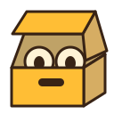

Mossy floppy / rot persist
Open SVG · Teal disk, pale label, moss on three edges.

Dark background
Smiling tombstone & candle / session sealed
Open SVG · The stone and the candle stay together as one character.

Dark background
Parchment scroll / tombs render
Open SVG · Rolled corners and broad writing lines.

Dark background
Watching archive / the archive stares back
Open SVG · Open lid, two peeking eyes, one handle slot.


Dark background
Trenchcoat of corgis / assemble your team
Open SVG · Teal fedora and open coat, six corgis in two rows of three.

Dark background
This is a grouped character mark, not a favicon-first simplification: the six dogs are easiest to read at 64 pixels and above.